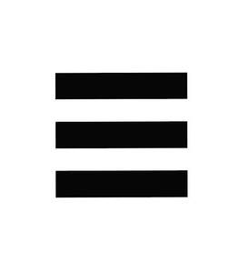

Trade Mark Journal No.2025/050 12 December 2025
UK00004284349 27 October 2025 (5,9,14,18,21,25,28,35,42,45)

- Class 5
- Pharmaceutical preparations; dietetic food and substances adapted for medical use, dietary supplements for humans; vitamin, mineral and protein supplements; body building food supplements; weight gain supplements; energy supplements.
- Class 9
- Monitoring apparatus and instruments for the recordal and measurement of health and fitness parameters, other than for medical use; multifunction electronic devices to view, measure and upload to the internet information, including time, date, body and heart rate values, global positioning, direction, distance, altitude, speed, calories burned and steps taken; pedometers; calorie counting apparatus in the nature of wearable activity trackers, other than for medical purposes; heart-rate and fitness monitoring apparatus in the nature of wearable activity trackers, other than for medical purposes; headphones; phone cases; sunglasses and spectacles; frames and cases for sunglasses and spectacles; anti-glare visors; mouth guards.
- Class 14
- Precious metals and their alloys and goods in precious metals or coated therewith, not included in other classes; jewellery; imitation jewellery; necklaces; bracelets; earrings; rings; jewellery charms; jewellery cases, jewellery presentation boxes; precious and semi-precious stones; horological and chronometric instruments; clocks; watches; watches of all types including incorporating altimeters, navigation, compasses, pedometers, speed distance monitors, speed sensors, distance monitors with speed sensor and heart rate monitors; sports watches; stopwatches; chronometric instruments; watch straps and bands; watch bracelets; watch chains; clock cases; watch cases; badges of precious metal; medals; ornamental pins; lapel pins; cuff links; key rings [trinkets or fobs]; key chains and charms therefor; parts and fittings for all the aforesaid goods.
- Class 18
- Leather and imitations of leather, and goods made of these materials and not included in other classes; leather, un-worked or semi-worked; animal skins, hides; artificial leather, cowhide, lining leather; bags; leather bags, bags of synthetic materials; luggage and carrying bags; sports bags; gym bags; athletic bags; trunks; travelling bags and cases; duffel bags; bags for campers; handbags; shoulder bags; cases of leather; satchels; briefcases; suitcases; rucksacks and backpacks; satchels made of leather and imitation leather; beach bags; bumbags; shoe bags; casual bags; school bags; shopping bags; tote bags; tool bags; messenger bags; document bags; belt bags; hip bags; waist packs; key cases; waterproof protective covers specifically adapted for backpacks; straps for luggage; wallets and purses; luggage tags made of leather; umbrellas, parasols and walking sticks; whips, harness and saddlery; clothing for pets; collars and leashes for animals; parts and fittings for all the aforesaid goods.
- Class 21
- Drinking bottles; glassware, porcelain and earthenware not included in other classes.
- Class 25
- Clothing, footwear, headgear; bodybuilding clothing, fitness clothing, gym clothing, t-shirts, vests, tank tops, hoody jackets and jumpers, jumpers, articles of lifting fitness and gym clothing, bodybuilding and weightlifting clothing straps, shorts, trousers, tracksuits, tracksuit bottoms, jogger bottoms, wristbands, sweatbands, headbands, underwear, socks, gloves, base layer clothing, athletic tights and leggings; hats, caps, beanie hats; shoes, trainers, track shoes, boots, sandals, flip flops.
- Class 28
- Games and playthings; gymnastic and sporting articles not included in other classes; gymnasium, sport and training equipment; balls; sport and game balls; footballs, rugby balls, american footballs, golf balls, table tennis balls, basketballs; bats; table tennis bats, golf clubs, cricket bats, baseball bats, lacrosse sticks; skis; snowboards; basket ball rings, table tennis tables; athletic exercise cones; sporting protective items, other than helmets; weight lifting belts, athletic knee and wrist supports, boxing gloves; punch bags; weights for lifting exercises (sports articles); exercise balls; treadmills; exercise machines; cardio-vascular exercise machines; exercise bicycles; cross trainer exercise machines; stair-stepping machines for exercise.
- Class 35
- Retail services all connected with the sale of the following: dietetic food and substances adapted for medical use, dietary supplements for humans, vitamin, mineral and protein supplements, body building food supplements, weight gain supplements, energy supplements, scientific, research, navigation, surveying, photographic, cinematographic, audio visual, optical, weighing, measuring, signalling, detecting, testing, inspecting, lifesaving and teaching apparatus and instruments, monitoring apparatus and instruments for the recordal and measurement of health and fitness parameters, other than for medical use, multifunction electronic devices to view, measure and upload to the internet information, including time, date, body and heart rate values, global positioning, direction, distance, altitude, speed, calories burned and steps taken, apparatus and instruments for recording, transmitting, reproducing or processing sound, images or data, recorded and downloadable media, pedometers, calorie counting apparatus, other than for medical purposes, heartrate and fitness monitoring apparatus, other than for medical purposes, computer software, computer software for providing information relating to fitness, calorie counting and step counting, headphones, phone cases, sunglasses and spectacles, frames and cases for sunglasses and spectacles, anti-glare visors, mouth guards, precious metals and their alloys and goods in precious metals or coated therewith, not included in other classes, jewellery, imitation jewellery, necklaces, bracelets, baller bands, earrings, rings, jewellery charms, jewellery cases, jewellery display stands, precious and semi-precious stones, horological and chronometric instruments, clocks, watches, watches of all types including altimeters, navigation, compasses, pedometers, speed distance monitors, speed sensors, distance monitors with speed sensor and heart rate monitors, all being parts of watches, sports watches, stopwatches, chronometric instruments, watch straps and bands, watch bracelets, watch chains, clock cases, watch cases, badges of precious metal, medals, ornamental pins, lapel pins, cuff links, key rings [trinkets or fobs], key chains and charms therefor, parts and fittings for all the aforesaid goods, printed matter, instructional and teaching materials, leather and imitations of leather, and goods made of these materials and not included in other classes, leather, un-worked or semi-worked, animal skins, hides, artificial leather, cowhide, lining leather, bags, leather bags, bags of synthetic materials, luggage and carrying bags, sports bags, gym bags, athletic bags, trunks, travelling bags and cases, duffel bags, bags for campers, handbags, shoulder bags, cases, satchels, briefcases, suitcases, rucksacks and backpacks, satchels made of leather and imitation leather, beach bags, bumbags, shoe bags, casual bags, school bags, shopping bags, tote bags, carrier bags, tool bags, messenger bags, document bags, belt bags, hip bags, waist packs, key cases, waterproof protective covers specifically adapted for backpacks, straps for luggage, wallets and purses, belts, luggage tags made of leather, umbrellas, parasols and walking sticks, whips, harness and saddlery, clothing for pets, collars and leashes for animals, parts and fittings for all the aforesaid goods, household or kitchen utensils and containers, drinking bottles, water bottles, drinking bottles, drinking bottles for sport, glassware, porcelain and earthenware, clothing, footwear, headgear, bodybuilding clothing, fitness clothing, gym clothing, T-shirts, vests, tank tops, hoody jackets and jumpers, jumpers, lifting fitness and gym accessory clothing, bodybuilding and weightlifting clothing straps, shorts, trousers, tracksuits, tracksuit bottoms, jogger bottoms, wristbands and wrist straps, sweatbands, headbands, underwear, socks, gloves, base layer clothing, compression wear clothing, hats, caps, beanie hats, shoes, trainers, track shoes, boots, sandals, flip flops, lace, braid and embroidery, and haberdashery ribbons and bows, buttons, hooks and eyes, pins and needles, hair decoration, games and playthings, gymnastic and sporting, gymnasium, sport and training equipment, fitness equipment, balls, sport and game balls, footballs, rugby balls, american footballs, golf balls, table tennis balls, basketballs, bats, table tennis bats, golf clubs, cricket bats, baseball bats, lacrosse sticks, skis, snowboards, basket ball rings, table tennis tables, athletic exercise cones, sporting protective items, weight lifting belts, athletic knee and wrist supports, boxing gloves, punch bags, weights for lifting exercises (sports articles), exercise balls, treadmills, exercise machines, cardio-vascular exercise machines, exercise bicycles, cross trainer exercise machines, stairstepping machines for exercise, preserved, frozen, dried and cooked fruits and vegetables, oils and fats for food, protein based snack foods, protein based food bars, coffee, tea, cocoa and substitutes therefor, rice, pasta, noodles, tapioca and sago, flour and preparations made from cereals, breads, pastries and confectionary, chocolate, ice cream, sorbets and other edible ices, sugar, honey, treacle, yeast, baking powder, salt, seasonings, spices, preserved herbs, vinegar, sauces and other condiments, non-alcoholic beverages, mineral and aerated waters, fruit beverages and fruit juices, protein drinks, protein enriched sports beverages, beverages containing vitamins, powders for the preparation of beverages, powdered protein drink mixes, syrups and other preparations for making non alcoholic beverages; the bringing together, for the benefit of others, of a variety of goods, excluding the transport thereof, enabling customers to conveniently view and purchase those goods; retail services namely those services offered via a general merchandising sports store and clothing store, retail store outlets, online retail stores, wholesale stores, online mail order catalogue, via mobile phone and by direct marketing, presentation of goods on communication media for retail purposes, by means of electronic media through a website; provision of an on-line marketplace for buyers and sellers of goods and services, all connected with the sale of the following: dietetic food and substances adapted for medical use, dietary supplements for humans, vitamin, mineral and protein supplements, body building food supplements, weight gain supplements, energy supplements, scientific, research, navigation, surveying, photographic, cinematographic, audio visual, optical, weighing, measuring, signalling, detecting, testing, inspecting, lifesaving and teaching apparatus and instruments, monitoring apparatus and instruments for the recordal and measurement of health and fitness parameters, other than for medical use, multifunction electronic devices to view, measure and upload to the internet information, including time, date, body and heart rate values, global positioning, direction, distance, altitude, speed, calories burned and steps taken, apparatus and instruments for recording, transmitting, reproducing or processing sound, images or data, recorded and downloadable media, pedometers, calorie counting apparatus, other than for medical purposes, heart-rate and fitness monitoring apparatus, other than for medical purposes, computer software, computer software for providing information relating to fitness, calorie counting and step counting, headphones, phone cases, sunglasses and spectacles, frames and cases for sunglasses and spectacles, anti-glare visors, mouth guards, precious metals and their alloys and goods in precious metals or coated therewith, not included in other classes, jewellery, imitation jewellery, necklaces, bracelets, baller bands, earrings, rings, jewellery charms, jewellery cases, jewellery display stands, precious and semiprecious stones, horological and chronometric instruments, clocks, watches, watches of all types including altimeters, navigation, compasses, pedometers, speed distance monitors, speed sensors, distance monitors with speed sensor and heart rate monitors, All being parts of watches, sports watches, stopwatches, chronometric instruments, watch straps and bands, watch bracelets, watch chains, clock cases, watch cases, badges of precious metal, medals, ornamental pins, lapel pins, cuff links, key rings [trinkets or fobs], key chains and charms therefor, parts and fittings for all the aforesaid goods, printed matter, instructional and teaching materials, leather and imitations of leather, and goods made of these materials and not included in other classes, leather, un-worked or semi-worked, animal skins, hides, artificial leather, cowhide, lining leather, bags, leather bags, bags of synthetic materials, luggage and carrying bags, sports bags, gym bags, athletic bags, trunks, travelling bags and cases, duffel bags, bags for campers, handbags, shoulder bags, cases, satchels, briefcases, suitcases, rucksacks and backpacks, satchels made of leather and imitation leather, beach bags, bumbags, shoe bags, casual bags, school bags, shopping bags, tote bags, carrier bags, tool bags, messenger bags, document bags, belt bags, hip bags, waist packs, key cases, waterproof protective covers specifically adapted for backpacks, straps for luggage, wallets and purses, belts, luggage tags made of leather, umbrellas, parasols and walking sticks, whips, harness and saddlery, clothing for pets, collars and leashes for animals, parts and fittings for all the aforesaid goods, household or kitchen utensils and containers, drinking bottles, water bottles, drinking bottles, drinking bottles for sport, glassware, porcelain and earthenware, clothing, footwear, headgear, bodybuilding clothing, fitness clothing, gym clothing, T-shirts, vests, tank tops, hoody jackets and jumpers, jumpers, lifting fitness and gym accessory clothing, bodybuilding and weightlifting clothing straps, shorts, trousers, tracksuits, tracksuit bottoms, jogger bottoms, wristbands and wrist straps, sweatbands, headbands, underwear, socks, gloves, base layer clothing, compression wear clothing, hats, caps, beanie hats, shoes, trainers, track shoes, boots, sandals, flip flops, lace, braid and embroidery, and haberdashery ribbons and bows, buttons, hooks and eyes, pins and needles, hair decoration, games and playthings, gymnastic and sporting, gymnasium, sport and training equipment, fitness equipment, balls, sport and game balls, footballs, rugby balls, american footballs, golf balls, table tennis balls, basketballs, bats, table tennis bats, golf clubs, cricket bats, baseball bats, lacrosse sticks, skis, snowboards, basket ball rings, table tennis tables, athletic exercise cones, sporting protective items, weight lifting belts, athletic knee and wrist supports, boxing gloves, punch bags, weights for lifting exercises (sports articles), exercise balls, treadmills, exercise machines, cardiovascular exercise machines, exercise bicycles, cross trainer exercise machines, Stairstepping machines for exercise, preserved, frozen, dried and cooked fruits and vegetables, oils and fats for food, protein based snack foods, protein based food bars, coffee, tea, cocoa and substitutes therefor, rice, pasta, noodles, tapioca and sago, flour and preparations made from cereals, breads, pastries and confectionary, chocolate, ice cream, sorbets and other edible ices, sugar, honey, treacle, yeast, baking powder, salt, seasonings, spices, preserved herbs, vinegar, sauces and other condiments, nonalcoholic beverages, mineral and aerated waters, fruit beverages and fruit juices, protein drinks, protein enriched sports beverages, beverages containing vitamins, powders for the preparation of beverages, powdered protein drink mixes, syrups and other preparations for making non alcoholic beverages; marketing research; advertising; rental of advertising space; rental of advertising time on communication media; organization of events, exhibitions, fairs and shows for commercial, promotional and advertising purposes; promotion of goods and services through sponsorship of sports events; business management; business administration; office functions; customer loyalty services for commercial, promotional and/or advertising purposes; administration, organization and management of customer loyalty programs; organization, operation and supervision of customer loyalty schemes; providing consumer product information via the internet; commercial information and advice for consumers; price comparison services; customer service management for handling customer enquiry, comments and complaint services; sales promotion; fashion shows for promotion purposes; shop window dressing; import-export agency services; none of the aforementioned for cosmetics, beauty products, perfume or body lotion.
- Class 42
- Scientific and technological services and research and design relating thereto; industrial design, analysis and research services; computer programming; design and development of computer hardware and software; cloud computing services; design, development and maintenance of proprietary computer software in the field of natural language, speech, speaker, language, voice recognition, and voice-print recognition; rental of computer hardware and software apparatus and equipment; consultancy in the design and development of computer hardware; computer software consultancy services; design of computer databases; computer security and data security consultancy; data encryption services; maintenance, repair and updating of computer software and applications; technical support services, diagnosing and troubleshooting of computer hardware and software problems, and computer help desk services; support and consultation services for developing computer systems, databases and applications; providing computer hardware or software information online; website creation, design and maintenance services; website hosting services; application service provider (ASP) services featuring hosting computer software applications of others; application service provider (ASP) services featuring software for creating, authoring, distributing, downloading, transmitting, receiving, playing, editing, extracting, encoding, decoding, displaying, storing and organizing text, graphics, images, audio, video, and multimedia content, and electronic publications; application service provider (ASP) services featuring software for use in connection with voice recognition software and voice-enabled software applications; providing online non-downloadable software; providing software as a service (SaaS); providing search engines for obtaining data via the internet and other electronic communications networks; computer services, namely providing a user-customized feed of news, sports, weather, commentary, and other information, content from periodicals, blogs, and websites, and other text, audio, video, and multimedia content; creating and designing website-based indexes of information for others [information technology services]; electronic data storage services; medical research; medical laboratories; cartography and mapping services; information, advisory and consultancy services relating to all the aforesaid.
- Class 45
- Online social networking services; social networking services provided via a website.
OLR Holdings Ltd
Representative: Marks & Clerk LLP